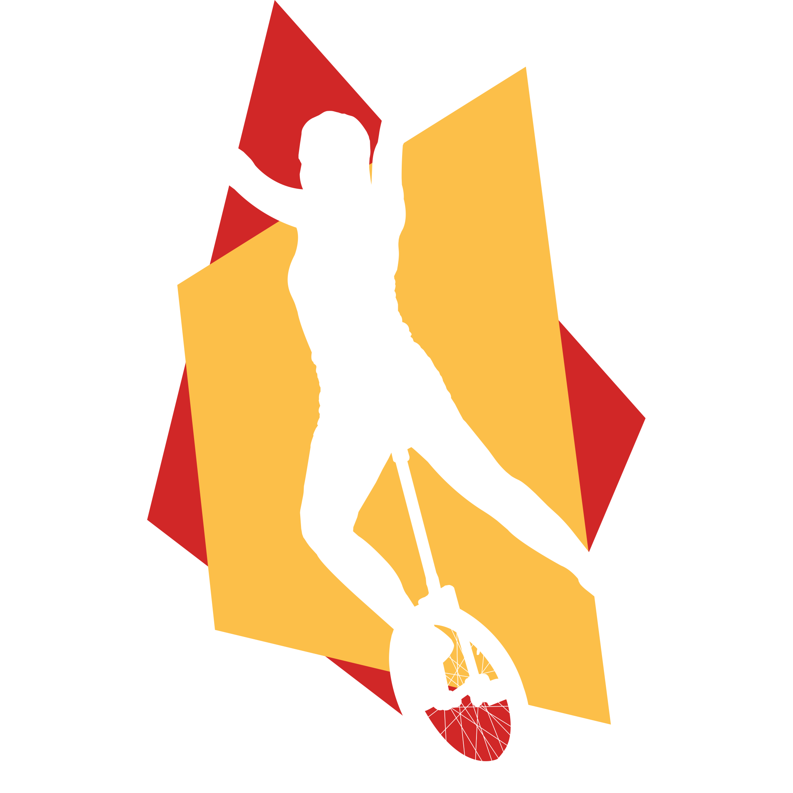

Wir verwenden die folgenden Farben:
"ODM Blau" darf als Hintergrundfarbe genutzt werden.
"ODM Rot" und "ODM Gelb" sollten als Hintergrundfarbe vermieden werden, außer es handelt sich um Warnungen.
Werden alle drei Hauptfarben zusammen genutzt (zum Beispiel als Trenner), so ist "ODM Rot" IMMER in der Mitte. In diesem Falle ist es zu bevorzugen, dass die Farben in der Leserichtung Oben nach Untern, Links nach Rechts in der Reihenfolge "ODM Blau", "ODM Rot", "ODM Gelb" vorkommen.
Das Logo existiert in drei Varianten:
Dies ist unser "Standardlogo". Wenn es keinen Grund gibt eine Andere Variante zu nutzen, nutzen wir dieses Logo. Wir versuchen das Logo auf "ODM Blau" zu platzieren und ringsrum einen Rahmen von mindestens einer doppelten Schrifthöhe Platz zu anderen Elementen zu lassen.
Wir bevorzugen "ODM Blau", damit unsere drei Hauptfarben zusammen erscheinen und unsere "Marke" einfach wiederzuerkennen ist.

Auf hellen oder transparenten Hintergründen verwenden wir standardmäßig das helle Logo mit Schatten. Der Schatten verankert das Logo im Raum und stellt eine Basis für das Logo.
Das Dunkle Logo verwenden wir auf hellen oder transparenten Hintergründen, auf denen der Schatten störend wäre.
Unser Design hat Ecken. Ecken werden bei uns nicht abgerundet.
Wir halten uns allgemein an 90° Winkel.
Als stilistisches Element darf ein 7° Winkel für die Farbreihenfolge "ODM Blau", "ODM Rot", "ODM Gelb" genutzt werden.
(In Ausnahmefällen:)
Für Icons verwenden wir Google Material Icons, möglichst in gefüllter Form.
Als Schriftart verwenden wir die variable Schriftart Mona Sans.
Wir verwenden normal keine Rahmen. In Dokumenten, die von Teilnehmern oder in großer Stückzahl gedruckt werden, dürfen Hintergrundfarben durch Rahmen ersetzt werden.
Für Druck: